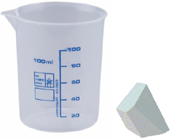
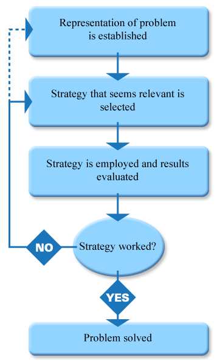
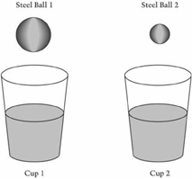

2
How Different Types of Knowledge Are Assessed
Copyright © 2011 by Albert Oosterhof. All rights reserved.
How Different Types of Knowledge Are Assessed
This chapter is concerned with making learning visible. Unless a teacher can see, hear, or use other senses to detect a student’s learning, the teacher cannot know whether learning has taken place. A teacher cannot assess a student’s learning unless there is observable evidence of that learning.
Making learning visible, however, is difficult. Most of a person’s knowledge and mental actions are invisible to others. Because we cannot see a person’s thoughts, we depend on indicators that suggest the nature of her or his knowledge. To illustrate, consider the following:
How could you indicate that you know the universe is very large and that it contains a very large number of objects?
How could you indicate that you know the concept of a verb?
In each case, you might provide evidence of your knowledge as follows:
Regarding the magnitude of the universe, you might say the universe is large because it contains Earth, other planets, and our sun. The sun is one of billions of stars in our galaxy, and individual stars are light-years away from each other. Our galaxy, although very large, is but one of billions of galaxies in the universe.
Regarding the concept of a verb, you might read through several paragraphs you have not seen before and circle each word that is being used as a verb.
To provide evidence of your knowledge, you must do things that others can see. Likewise, to assess a student’s knowledge, a teacher must ask students to do something visible that indicates presence of that knowledge. A description of what students will be asked to do is called a performance objective. (Alternative names for performance objectives are behavioral objectives or instructional objectives; these names are interchangeable.) A performance objective describes an observable event that will indicate that a student has learned the targeted knowledge.
This chapter helps you achieve the following five skills:
- Recognize basic types of knowledge
- Work at higher levels of cognitive complexity
- Select tasks that provide good indications of different types of knowledge
- Develop goals and objectives that align with standards
- Create performance objectives
Taking into Account Types of Knowledge
Imagine this rather simple interaction occurring:
Two individuals are with you. You ask one individual to watch your hand and the other one to look away. Holding up three fingers, you ask the first individual to say how many fingers you are showing. Following a correct response, you ask the individual who has been looking away how many fingers you were showing. Even if anticipating a trick or joke because the task is simple, the second individual probably would respond with the same answer: “three fingers.”
From outward appearances, the visible performance of both these individuals is the same. However, you know that quite different skills are involved. The first person is illustrating the ability to count, while the second person is recalling information. Although the first and second person may each have both capabilities, this often will not be the case for students in the process of learning the concept of counting.
When assessing students’ learning, it is important to take into account the type of knowledge we are trying to assess. More specifically, we need to design assessments such that any differences in how students perform depend on their proficiency with what we are trying to assess. Stated negatively, we do not want to use tasks in an assessment that students can successfully complete using knowledge not relevant to the competency being evaluated.
We can improve the chances of measuring the appropriate competency by knowing the types of learned capabilities involved. This is because different types of tasks are particularly effective at assessing the different types of capabilities.
Various classification schemes have been used to identify types of capability. One is the set of categories proposed some time ago by Bloom (1956) that is still widely used in education. Our understanding of how knowledge is learned has evolved; however, Bloom’s taxonomy is a good starting place for our discussion because of its familiarity.
Bloom devised his categories through a series of informal conferences that he led from 1949 to 1953, during which a large number of performance objectives, primarily from college-level courses, were reviewed. At the time, behaviorism was dominant in education, with behavioral objectives widely used to structure instruction. Bloom’s taxonomy was an attempt to categorize behavioral objectives rather than establish the nature of knowledge. Development of the taxonomy was governed by educational, logical, and psychological considerations, in that order of importance, with emphasis placed on developing categories that matched “the distinctions teachers make in planning curricula or in choosing learning situations” (Bloom, 1956, p. 6). Bloom referenced three domains—cognitive, affective, and psychomotor—but he developed categories for only the cognitive domain.1
Table 2.1 summarizes the familiar six categories of Bloom’s taxonomy. However, not widely known is that, as shown in the table, Bloom actually listed the last five as subcategories under Intellectual Abilities and Skills, referred to here only as intellectual skills.2 Recognizing Bloom’s taxonomy as involving two basic categories, knowledge and intellectual skills, is relevant because of the resemblance to two similar categories used by modern cognitive psychologists: declarative knowledge and procedural knowledge.
Declarative knowledge is equivalent to what Bloom calls knowledge. Declarative knowledge is knowing that something is the case. It is information that can be conveyed in words, orally or in writing; that is, knowledge that can be declared.
Procedural knowledge is roughly equivalent to what Bloom refers to as intellectual skills, although the overlap is not complete. Although Bloom’s taxonomy remains widely used in education, the subcategories Bloom associates with intellectual skills depart substantially from what is now known about the structure of procedural knowledge (Confrey, 1990; Gierl, 1997; Snow, 1989; Tittle, Hecht, & Moore, 1993). Procedural knowledge is knowing how to do something; it involves making discriminations, understanding concepts, and applying rules that govern relationships and often includes motor skills and cognitive strategies.
In modern cognitive psychology, problem solving is presented as a third category. The ability to solve problems builds on declarative knowledge and procedural knowledge. Problem solving may involve domain-specific strategies, suggesting that different strategies are employed when solving problems in different content areas, such as math versus writing.
Again, the distinctions between declarative knowledge, procedural knowledge, and problem solving are highly relevant because different types of performance are effective at assessing skills associated with these respective types of capabilities.
Declarative Knowledge
Declarative knowledge refers to information that can be stated verbally. Declarative knowledge includes the recall of specific facts, principles, trends, criteria, and ways of organizing events. An example is recalling that you saw three robins (as opposed to looking at the robins and determining that you saw three birds). Other examples include recalling the definitions of words, the physical and chemical characteristics of elements and compounds, and that the trend each year is for an increase in the number of cars on the highway. Declarative knowledge also includes explanations such as the differences and similarities of fiction and nonfiction, and explanations of relationships between factors that contribute to global warming.
A very broad range of questions can be used to ask students to declare what they know. Here are some examples:
Tell me what is meant by relative humidity.
What is the difference between air and oxygen?
Why do interest rates affect the stock market?
Contrast the geography of northern and southern Africa.
Why do heavy objects like ships float in water?
Often the importance of declarative knowledge is downplayed, even to the extent of discouraging the teaching and assessment of this type of knowledge. This happens in part because declarative knowledge is wrongly thought of as being limited to memorization of facts. Although knowledge of facts is part of declarative knowledge, so is knowledge of trends, abstractions, criteria, and ways of organizing events. As we note later, declarative knowledge is fundamental to one’s ability to solve intellectual problems.
Procedural Knowledge
Procedural knowledge is knowledge of how to do things. Examples of procedural knowledge include demonstrating conversions between the Fahrenheit and Celsius scales; correctly classifying whales, sharks, porpoises, salmon, and other sea animals as fish or mammal; and identifying which object in a picture is a tree. Other examples include visually discriminating between a $1 bill and a $5 bill, and predicting whether an object will float or sink in water.
Although the same content is often involved in both declarative and procedural knowledge, these two capabilities are distinct. For example, being able to state that most assessments in a classroom are informal rather than formal (declarative knowledge) is different from being able to observe and correctly classify assessments as informal or formal (procedural knowledge). Likewise, being able to explain that transmissions with a mobile phone are routed from one transmitting tower to another as one travels (knowledge that can be declared) is different from being able to identify which phones without cords are mobile phones (knowledge that requires invoking a classification procedure). Unfortunately, it is common to assume that a student has achieved both types of knowledge after examining only one of these two capabilities.
From a measurement perspective, it is useful to subdivide procedural knowledge into concepts and rules. Different techniques are used to assess these two types of procedural knowledge.
Concepts
Concepts involve a characteristic that can be used to classify physical objects or abstractions. The self-test you just completed involved classifying the concepts of declarative knowledge and procedural knowledge.
A concept can be concrete or abstract. To assess concrete concepts, have students point at or otherwise identify objects or images that have the specified characteristic. Examples include identifying which objects are balls, circling the letter d within words, and identifying which written sentences involve an analogy.
The examples to be classified should be provided by the teacher, not the student, and should involve previously unused illustrations of the concept that include characteristics relevant to their classification as examples versus nonexamples. If students provide their own examples, or if previous illustrations are reused, it is possible that knowledge of information rather than knowledge of the concept is being assessed. That is, a declarative rather than procedural representation may be involved.
In fact, it is important to determine whether students have a declarative representation of a concept. For example, can students define what a computer is or explain what scientific method refers to? The student stating what is known, often augmented with examples provided by the student, is an excellent approach to assessing that student’s declarative representation of a concept.
Because a concept involves a class of things, it should be assessed under a variety of conditions. If, for example, the concept of a rectangle is being assessed, then the student should be asked to identify rectangles that have light or heavy lines, those with lengths close to their widths and others with lengths much longer than their widths, and those displayed at different angles. The student similarly should recognize that circles, triangles, and other shapes that have light or heavy lines are not rectangles. To demonstrate mastery of a concept, a student must perceive all qualities relevant to the concept and disregard all qualities irrelevant to the concept.
Abstract concepts involve understanding a classification of nontangible objects, events, or relations. Unlike concrete concepts, abstract concepts involve things that cannot be touched or directly sensed. Examples include the concepts of sailing, a mystery novel, a hypothesis, gravity, and a tax shelter. Abstract concepts typically incorporate concrete concepts. For instance, sailing involves boats, wind, water, sails, and many other concrete items that can be touched or otherwise sensed. However, abstract concepts of sailing also rely on abstractions such as right-of-way rules and the boat’s center of gravity. Because abstractions cannot be touched or pointed at, students are asked to distinguish between examples and nonexamples of the concept. And here again, students should be assessed under a variety of conditions.
The distinction between concrete and abstract concepts is not always clear because they often share the same name. For example, the basic shape of a rectangle is learned as a concrete concept. However, conceptualizing a rectangle as “a closed plane figure formed by four line segments that intersect at right angles” is an abstract concept. These may be different concepts that share the same name, knowledge of which would have to be assessed separately.
Rules
A rule involves the application of principles that regulate the relationship among classes of objects or events. For example, a rule pertains to using the indefinite article a or an in sentences. Another example is applying Boyle’s law (the product of the volume of a confined gas and its pressure is a constant) by calculating what the pressure of air in a pump would become if its volume were decreased by 90 percent. Rules in this sense are not statements of proper procedure such as leaving the classroom only after obtaining permission. As used here, rules pertain to abstract functional relationships such as those referenced above.
To assess a rule, students should be asked to apply the rule. Rules regarding the use of the indefinite article a or an in sentences can be assessed by asking students to supply the indefinite article within sample sentences. Boyle’s law can be assessed by having students compute air pressure and volume for varying conditions.
As with concepts, the teacher, not the student, should provide the situations to which the rule is to be applied. Directions to the student might suggest which rule is to be applied, as in the problem “Convert 75° Fahrenheit to Celsius.” The examples should involve previously unused applications of the rule. Obtaining unused applications is often very simple, such as using a different Fahrenheit temperature or using unknown words when measuring students’ knowledge of spelling words involving ie.
Being able to state a rule (information) is different from using the rule. Stating “The product of the volume of a confined gas and its pressure is a constant” is not equivalent to applying Boyle’s law, nor is stating Boyle’s law a prerequisite to understanding this rule. Information often facilitates learning concepts and rules but is not a prerequisite to and certainly is not equivalent to a working knowledge of concepts and rules.
With practice, many rules become automated. That is, one becomes able to perform the related tasks efficiently without consciously thinking about it. Familiar examples of automatic processing include reading and speaking, arithmetic procedures, fingerings with a musical instrument, and actions during an athletic competition. Major advantages of the automatic process are that tasks can be performed without conscious control or attention, allowing for multiple tasks to be performed quickly and simultaneously. You may recall the difference between the very conscious moves you made when you first rode a bicycle or drove a car and the automatic process you use now.
Of course, not all procedural rules become automated, even with practice. And that is good, in fact, important. A procedure that remains under conscious control can become a strategy, which we will shortly observe is an essential component of problem solving. Because a controlled process requires attention, however, it requires considerably more cognitive processing and limits the number of other tasks that can be completed concurrently.
Problem Solving
A problem to be solved exists when one has a goal and has not yet identified a means for reaching that goal (Gagné,3 Yekovich, & Yekovich, 1993). Examples of problem solving include writing an expository paper, preparing a persuasive speech, or planning a vacation or travel to a new city.
By “problem solving,” we are not referring to the ability to solve a math problem such as multiplying pairs of three-digit numbers or even solving basic algebra problems. Those skills involve procedural knowledge, specifically rules. Once the relevant rule is learned, one can apply the procedure to multiply other pairs of numbers, or solve a series of similar algebraic problems.
In cognitive psychology, problem solving involves a sequence of steps, beginning with establishing a representation of the problem, then selecting a strategy that seems appropriate for resolving the problem, followed by evaluating the results of employing that strategy. Figure 2.1 illustrates the basic components of problem solving.
Establishing a representation of the problem, in essence, involves identifying the goal to be reached. An example of a goal could be something like, “I have to get to Phoenix, Arizona.” The representation of the problem might also involve specifics such as when you need to arrive in Phoenix and how much money you can spend to get there. Or, these specifics might become apparent as the problem-solving process evolves.
After a representation of the problem is established, a strategy that seems relevant to solving the problem is selected from among previously learned strategies. These strategies involve previously learned procedural rules that were not automated, but remain under conscious control. For getting to Phoenix, one strategy might be to check airline websites for available flights and costs. Another strategy would be to check Expedia or Orbitz. A different strategy would be going to MapQuest or a similar site to determine what would be involved in driving there.
With problem solving, after a strategy is selected and employed, the results from using the strategy are evaluated. It is common and usually appropriate for students to solve the problem using different strategies. If employing a strategy solves the problem or at least seems to be providing anticipated results, use of the strategy continues. Otherwise, an alternate strategy is selected and those results evaluated. This process of selecting strategies and evaluating results continues until the problem is solved (or until one gives up).
A student’s ability to solve a problem is assessed in a manner similar to that used for assessing rules. Both involve presenting a specific situation in which students can apply their skill. However, in assessing problem solving, students are not told which relationships are involved; instead, they are asked to generate a solution from the knowledge they have. Because problem solving involves sequentially selecting among strategies, employing a strategy and evaluating results, and often selecting alternate strategies, written tests (including multiple-choice and essay items) do not provide effective measures of problem solving. Performance assessments, in which students are observed, often individually and under controlled conditions, are used instead.
Something to Try...
- This and other chapters include a number of Apply what you are learning exercises. Each, in essence, is a self-assessment. Look at some of these exercises, and, for each, try to identify whether you are being asked to demonstrate declarative knowledge, procedural knowledge, or problem solving.
- Think of some competencies you presently or in the future would likely teach your students. For each competency, does it involve declarative knowledge, procedural knowledge, or problem solving? (Some competencies involve multiple types. In that case, it is best for the assessment to focus on one type. If more than one type is to be assessed, using separate assessments for each type is preferable.)
Working at Higher Levels of Cognitive Complexity
Another important dimension of learning and assessment is cognitive complexity. In large part, this importance is because real-world applications tend to involve knowledge and skills at higher complexity levels. In general, tasks are more complex when they involve abstractions or multiple operations, or when they require generalization to settings different from those in which the learning originally took place. The issue of cognitive complexity is germane to declarative knowledge, procedural knowledge, and problem solving.
We can illustrate cognitive complexity with examples involving simple machines. In physics, a simple machine is a device that requires application of a single force to operate. Simple machines include the lever, pulley, wheel and axle, inclined plane, wedge, and screw. Knowledge of simple machines might be measured with test items like, “List the names of the six simple machines” or “Briefly describe each of the six simple machines.” Both of these items measure declarative knowledge and involve tasks that are not cognitively complex.
An alternative test item would be, “A train that is unable to make it up a steeper grade may be able to make it up a gentler grade. Why is that?” Another item might be, “In what ways are a wedge and inclined plane similar, and in what ways are they different?” These two items also measure declarative knowledge, but are cognitively more complex because conceptualizing an answer involves multiple steps. They also present tasks that are probably dissimilar to examples used during instruction.
Test items that involve cognitively more complex tasks tend to be preferred over ones that are less complex. Part of the reason may be the natural desire to “expect more” of students rather than less. The more significant reason already alluded to is that cognitively complex tasks tend to be closer to real-world applications of knowledge than less complex tasks. For instance, being able to explain why a train has greater difficulty with steeper grades more closely approximates how one ultimately uses knowledge of inclined planes than being able to name or briefly describe the various simple machines.
Webb (2002), using his “Depth of Knowledge” model, divides cognitive complexity into four levels. Names and descriptions associated with each complexity level vary somewhat across content areas, with these being the ones used in science education:
- Level 1—Recall and reproduction. Requires rote responses, such as recall of facts, terms, and use of simple procedures.
- Level 2—Skills and concepts. Requires use of some decisions as to how to approach the task, such as involved with classifying, estimating, organizing, and comparing data.
- Level 3—Strategic thinking. Involves abstractions and tasks requiring multiple operations, such as drawing conclusions from observations, using evidence to develop a logical argument, and using existing procedures to solve new problems.
- Level 4—Extended thinking. Involves making multiple connections between ideas, often over an extended period of time, such as carrying out a scientific investigation beginning with specifying the problem and planning the experiment through analyzing data from the experiment and forming conclusions.
Webb’s Depth of Knowledge model is used to align assessments with curricula in a variety of statewide testing programs and the National Assessment of Educational Progress (for example, see Webb, Herman, & Webb, 2006).
It is easy to confuse cognitive complexity with the difficulty of a task; however, their distinction is important to understanding complexity. Many tasks are cognitively simple but are difficult to perform correctly because of the obscurity of knowledge involved. An example would be recalling the names of rivers that define boundaries between countries. Few people can name these rivers even though the level of cognitive complexity is low; it involves recall of facts. In contrast, a task you probably would find much easier to complete is ordering books online. This is a cognitively complex task that involves multiple steps as well as abstractions such as virtual shopping carts. But if such cognitively complex tasks were difficult to complete, online businesses would not be thriving. Cognitively complex tasks need not be difficult to master. They do, however, better represent real-world applications of content learned in school.
Although increased attention is being given to cognitive complexity, this concept is not new. Bloom (1956) does not use the term in his taxonomy; however, differences in levels of complexity are implicit within each of his categories. For instance, Bloom’s “Knowledge” category as noted earlier includes simpler aspects, such as knowledge of specific facts and terminology, and more complex aspects, such as knowledge of principles, generalizations, theories, and structures. Complexity is similarly represented in modern cognitive theory, with different complexity levels apparent within declarative knowledge, procedural knowledge, and problem solving.
When designing and interpreting assessments, both the type of capability (declarative knowledge, procedural knowledge, and problem solving) and the level of complexity should be taken into account. Ignoring either would easily result in tests that measure an unrepresentative sample of competencies. For example, a recent review of math items used in a statewide test found that many items measured procedural knowledge, but very few measured declarative knowledge. In contrast, math teachers understandably believe students should be able to explain math concepts and principles. When science items were reviewed, the reverse was observed, with few items measuring procedural knowledge and science teachers expressing the importance of students being able to perform science procedures.
In response to this situation, Oosterhof with others (2008) developed the Capabilities-Complexity Model, a framework for addressing both the type of capability and level of complexity when developing tests. Using this model, one first identifies the type of capability involved (declarative knowledge, procedural knowledge, or problem solving); then, using an adaptation of Webb’s Depth of Knowledge model, one establishes the level of complexity. Different procedures for establishing complexity are used depending on the type of capability involved.
Combining capabilities and complexities within a common framework actually simplifies the process. The first step, determining whether the focus of a particular test item is to be on declarative knowledge, procedural knowledge, or problem solving, is relatively easy to do. Once the type of capability is determined, the number of qualities used to determine the complexity level decreases. Consequently, this two-step process of establishing the type of capability and then addressing cognitive complexity is helpful because establishing the desired level of cognitive complexity can be quite difficult, particularly when higher complexity levels are involved. The next section uses the framework of the Capabilities-Complexity Model to select tasks that provide good indications of students’ competencies.
Selecting Tasks that Provide Good Indications of Knowledge
Later chapters describe techniques that can help produce test items, including performance assessments and items that use the essay and multiple-choice formats. Our present discussion concerns the types of tasks that provide good indicators of what students know. The type of task you select affects the type of item format you ultimately choose for a test, although there may be some surprises.
A task describes directions and materials presented to students and the responses or products students are to produce within an assessment. Here is an example of a grade 4 science task used on the 2005 National Assessment of Educational Progress (NAEP):
A drawing is presented that shows two partially but equally filled glasses of water. The drawing also shows two steel balls of different sizes. Students are asked in which glass of water would the water level rise the most were the balls put in the water. Students are similarly asked what would happen if the two balls were equal in size but one of them was light enough to partially float. Students are asked to write out their reasoning. (Figure 2.2 shows two test items associated with this task.)
A careful distinction needs to be drawn between task and competency. A task is what students are asked to perform. Their performance on a task provides an indication of what is in their minds; that is, their mental skill. A competency refers to the specific mental skills a particular task is designed to assess. For instance, here is the competency the above task was designed to assess:
Predicting and explaining water displacement by objects of different materials
Different types of tasks are particularly effective indicators of each type of capability. Therefore, one must first establish whether the task will focus on declarative knowledge, procedural knowledge, or problem solving. Particularly at higher complexity levels, a competency can involve more than one type of capability. In this case, each task should focus on just one type of capability.
Determining whether to focus on declarative knowledge, procedural knowledge, or problem solving often involves professional judgment, which is one reason that people highly knowledgeable in the subject area being assessed must develop assessments. Assessments always involve samples of tasks and it usually is not necessary to include tasks that measure every aspect of a competency. Collectively, however, tasks should representatively sample competencies, including the different types of capabilities.
Once the type of capability is selected, the level of cognitive complexity of the task is addressed. Let us look at the characteristics of tasks that provide good indicators of knowledge for lower and higher complexity levels, beginning with declarative knowledge.
Tasks for Declarative Knowledge
Declarative knowledge involves information one can state verbally. Therefore, tasks will require students to state, explain, discuss, or declare in some other way what they know. Here are the types of tasks that measure higher versus lower complexity declarative knowledge:
- The types of actions students perform. Higher complexity tasks involve explaining information, or analyzing, differentiating, and/or synthesizing information. Lower complexity tasks involve recalling or describing information.
- The types of information students are asked to convey. Higher complexity tasks address information related to properties and phenomena, concepts, principles, and techniques. Lower complexity tasks can also involve properties or phenomena, but more typically focus on facts, characteristics, and terminology.
- Abstractness of information involved. Abstract information is more complex than information involving tangibles.
- Similarity to the context in which the information was learned. Higher complexity tasks are more likely to involve a setting distinct from the one in which the knowledge was learned. Lower complexity tasks will involve settings similar or parallel to those in which the knowledge was originally learned.
Stop and take a moment to read through Table 2.2, which summarizes these attributes. We will use material from this table to contrast higher- and lower-complexity declarative tasks.
Here is a task that involves declarative knowledge at a lower complexity level. Go to Table 2.3 for analysis of its complexity.
Task:
List features of the moon that are visible when using binoculars or a small telescope.
Contrast this with the next example, which involves declarative knowledge at a higher complexity level. Table 2.4 provides analysis of its complexity.
Task:
A graduated cup is shown with an irregularly shaped object next to it. The object is half the height of the cup, and its size is such that it could be placed within the cup. The student is asked, if the cup were first filled halfway with water, how placing the object into the cup would allow one to measure the volume of the object.
Chi and Ohlsson (2005) provide an extended discussion related to learning complex declarative knowledge. They point out that human beings “have a lot of it.” They also point out that complex declarative learning does not consist of a set of isolated units but probably is organized as a combination of semantic networks, theories, and schemas. Declarative knowledge changes through learning in terms of size, connectedness, abstractness, and vantage point, among other qualities.
For instance, simply knowing that barometric pressure is associated with amount of precipitation is less connected than knowing that higher pressure inhibits vertical convection in the atmosphere, which prevents cloud formation. Increased connectedness improves the likelihood that previously learned declarative knowledge will be applied in settings different from which it was learned. As noted later, connections may also involve corresponding elements within declarative knowledge and procedural knowledge.
Tasks for Procedural Knowledge
As early as 1976, Anderson characterized the distinction between declarative knowledge and procedural knowledge as fundamental. He described declarative knowledge as a network of propositions, whereas procedural knowledge represented productions. While declarative knowledge involves knowing that something is the case, procedural knowledge involves knowing how to do something.
Likewise, tasks that require students to do something provide good indicators of procedural knowledge. These tasks might involve examples similar to those used in instruction, but the examples must not be identical to ones performed earlier. Otherwise, students may be able to successfully complete a task relying on declarative knowledge, recalling the outcome that resulted earlier. Similarly, to measure procedural knowledge, students should not provide their own examples for demonstrating a procedure. When designing assessments, you should always provide students the new example they are to use unless the intent is to measure declarative knowledge.
Here are the types of tasks that measure higher versus lower complexity procedural knowledge:
- The number of steps required to complete the procedure. Higher complexity tasks involve multiple steps or multiple simultaneous operations. Lower complexity tasks tend to involve a single operation.
- The directness of instruction given students. With higher complexity tasks, students often must infer what they are to do. With less complex procedural tasks, the task to be performed is specifically stated in the instructions.
- Abstractness of illustrations or variables. Procedures are more complex when they involve abstract rather than tangible illustrations or variables.
- How narrowly the learned procedure guides actions taken with the variables. Procedures that allow flexibility in their execution tend to be more complex than procedures that employ a highly specific action.
- Similarity to the context in which the procedure was learned. Using a procedure in a different context is more complex than when the setting is similar to the one in which it was learned.
Stop and read through these attributes as summarized in Table 2.6. As before, we will use information in this table to contrast higher- and lower-complexity tasks, this time with procedural knowledge.
Here is a task that involves procedural knowledge at a lower complexity level. Go to Table 2.7 for analysis of its complexity.
Task:
Identify by name the types of clouds illustrated in a photograph.
Contrast this with the next example, which involves procedural knowledge at a higher complexity level. Table 2.8 provides analysis of its complexity.
Task:
Purchase a latte at a coffee shop.
One might be tempted to classify the purchasing of items from a grocery or other familiar store as a cognitively simple task. It certainly may represent an easy task with respect to the likelihood of completing it satisfactorily. But as we have noted, for a number of reasons a higher cognitively complex task might be easy to successfully complete whereas a lower cognitively complex task could be difficult to complete because it deals with material with which students are not familiar. The reverse can certainly be and often is the case. More complex tasks can be difficult and less complex tasks easy. When developing assessments, avoid the temptation to increase the difficulty of tasks under the guise of measuring higher-level knowledge. The qualities we have addressed influence the complexity of declarative and procedural tasks. Let us look at what affects cognitive complexity when problem solving is involved.
Tasks for Problem Solving
Problem solving begins with establishing a representation of the problem and establishing a sense of the goal, followed by selecting a strategy that seems appropriate for reaching the goal. Problem solving relies on previously learned declarative knowledge and procedural knowledge. In fact, strategies used in problem solving represent a particular type of procedural knowledge, specifically rules that are not automated but instead are consciously and deliberately evaluated as to whether anticipated outcomes are being realized.
To assess problem solving, students are presented a problem to solve or a situation from which they must infer the problem that needs to be solved. Typically, any number of strategies might be used to successfully solve the problem. When scoring student performance where the focus of the assessment is on problem solving, proficiency with particular strategies or other types of procedural (or declarative) knowledge generally is not scored. What is scored are qualities such as the establishment of a clear and appropriate problem representation and sense of goal, the selection of a strategy that is reasonable given the goal to be achieved, and the adequacy with which outcomes from using the selected strategy are evaluated.
With this conceptualization of problem solving, some typical arithmetic “problems” would be classified as procedural knowledge. For instance, the following addition problem illustrates procedural knowledge; a learned procedure would be used to answer this and comparable items:
6.12 + 1.15 + 12.69 + 4.99 + 2.28 = ?
In contrast, here is a task involving arithmetic that illustrates problem solving:
You must decide what to order from the menu for lunch. At the end of the day, you will return for dinner and order from the same menu. You have a maximum of $30 to spend.
This last illustration represents problem solving, not because narrative was added, but because an appropriate response requires establishing a sense of the goal, selecting a strategy for achieving the goal, and evaluating the adequacy of the outcome.
Here are the types of problem-solving tasks that represent higher versus lower levels of cognitive complexity:
- Conciseness with which details of the goal to be achieved are stated. Problem solving is less complex when specific details of the goal are provided and little or no inference is needed to establish the problem to be solved.
- Variation of strategies typically used to solve the problem. Problems for which a dominant strategy typically is used are less complex than when diverse strategies are used to solve the problem.
- Number of steps or operations used to solve the problem. Problems that can be solved in one step or operation are less complex than those involving multiple steps or operations.
- Amount of originality required to solve the problem. Problem solving is less complex when the context in which the strategies are employed is similar to the context in which the strategies were learned.
Stop and read through these attributes as summarized in Table 2.10. As before, we will use information in this table to contrast higher- and lower-complexity tasks, this time with problem solving.
Here is a task that involves problem solving at a lower complexity level. Go to Table 2.11 for analysis of its complexity.
Task:
You have a good friend who is collecting signatures on a petition she supports. You agree with most of your friend’s values, but strongly oppose the position declared in the petition and know you would not sign it. Your friend asks you to sign her petition. What do you do?
Contrast this with the next example, which involves problem solving at a higher complexity level. Table 2.12 provides analysis of its complexity.
Task:
Although you have not previously taught abroad, you are interested in a summer teaching position in Croatia that recently was announced. You sent a letter indicating your interest and in response have been asked to submit your résumé. Create an updated résumé that will support your application for this position.
Selecting Tasks that Align with Standards
Within limits, a teacher can and has the right to influence what students learn in the classroom. Parents and other teachers, professional organizations, and governmental agencies rightfully also have expectations with respect to what students should learn. These expectations typically are expressed formally as a set of instructional goals referred to as standards. Accountability initiatives such as No Child Left Behind rely on these standards, as do most statewide assessments. Another important example is the present Common Core State Standards Initiative. Because most standards are stated broadly, there is considerable flexibility with respect to specific skills associated with a particular standard. Consequently, teachers must establish student performances to align with the standards. The process is not clear-cut and aspects of it are controversial.
Baker (2004) describes several approaches that might be used for alignment, the first being congruence. This approach is conceptually the easiest to understand but is the least realistic to accomplish. To achieve congruence, every educational goal is specified clearly and measured completely. There is complete alignment between standards and performances used to certify achievement of these standards.
Congruence is much easier to realize with training than with education. With settings as diverse as training a store clerk how to handle a purchase or training a student pilot how to fly an aircraft, concise goals are established, explicit and agreed-upon performance outcomes are identified for each goal, and achievement of each performance can be and typically is measured. In education, goals are too general and too numerous for this alignment approach to work.
On the other hand, were classroom instruction to focus exclusively on preparing for a test used to assess achievement of standards (in essence, training students to take the test), congruence would be achieved by aligning instruction with test content. This approach would increase test scores significantly. But even when the test is of high quality, focusing instruction on the subset of content that happens to be sampled by the test poorly prepares students for subsequent education and later life.
The other alignment approaches proposed by Baker (2004) involve various means of linking student performance to educational standards without full congruence. The lack of full congruence means there is looseness in the linkage. This looseness provides a practical alternative to congruence, but results in different student performance outcomes being aligned with each educational standard.
One approach Baker proposes for linking standards and performance outcomes is to establish a rubric that describes the types of student performance associated with varying levels of achieving the standard. The 2008 Wyoming State Standards use this type of approach. For each content domain, such as mathematics and language arts, benchmarks describe what students should be able to do at the end of each grade level, and “descriptors” establish rubrics for the benchmarks. These rubrics classify a student’s benchmark performance at one of four levels: advanced, proficient, basic, and below basic. Teachers and others can use descriptions provided in each rubric to establish what students are expected to do and plan instruction accordingly. Out of necessity, the benchmarks are more like educational goals than performance objectives; thus, the resulting looseness in the linkage between standards and performance outcomes means different educators will vary somewhat in their interpretation of the scoring rubrics. The rubrics amplify or provide additional detail to the standards, indicating the kinds of things proficient students will be able to do.
Another approach Baker proposes for aligning standards and performance outcomes is to establish examples of student work that represent varying degrees of success at achieving respective standards. The examples of student work can be thought of as representing various levels within a scoring rubric. A rubric might not actually exist, but could be inferred from the various samples of work. Because standards are stated broadly, numerous work samples are necessary to represent diverse aspects of performance associated with a given standard. For most standards, teachers are not provided work samples to facilitate the use of standards. Instead, they must accumulate their own from their students’ work, if in fact they choose to use this approach to better define a set of standards.
States vary widely with respect to the support provided teachers with selecting performances that align with standards. In some states, standards are written abstractly and provide little guidance regarding skills students are expected to achieve. In other states, standards are more concise and are further clarified through supportive materials developed by the state or local district. Regardless of support, ultimately the teacher determines specific instructional strategies and assessments used to help students achieve standards. Answering these questions can help with that determination:
-
With standards for which you are responsible, where do they exist in their most detailed form?
Standards are typically broken into more detailed subparts, often referred to as benchmarks. These benchmarks may in turn be subdivided further into grade-level expectations or written as publicly available specifications used to create test items for statewide assessments. The most detailed form of the standards may be provided in documents separate from the main standards. Work with the most detailed form of the standards, but interpret them in light of the titles or descriptions provided by broader or higher-level standards.
-
In their most detailed form, which standards are unclear with respect to the knowledge and skills being referenced?
When a standard is written concisely, different teachers working independently will be able to express in similar concrete terms the knowledge and skills associated with a particular standard. Working as a group, even if it involves just one or two other teachers, greatly improves the likelihood that rewritten standards will be similar to what others expect your students to be able to do.
-
When written in detailed form, are important knowledge and skills left out? If so, expand the descriptions detailed for those standards.
Practical limits must be recognized with respect to what students should be expected to learn. But if essential learning outcomes related to a standard are absent from the standard, its detailed description should be expanded. Written tests used in statewide and other large-scale assessments can measure many but not all important aspects of standards. If the most detailed descriptions of skills associated with standards are biased toward what can be measured by large-scale assessments, these descriptions should be augmented to fully represent important skills associated with respective standards.
-
What would you ask students to do to demonstrate their proficiency with the knowledge and skills?
As with the previous question, this one can be addressed by the individual teacher or by a small group of teachers working collaboratively. When answering the question of how students will demonstrate their proficiency, you are addressing a fundamental assessment issue. And regardless of whether this results in the formal preparation of performance objectives, you are establishing observable behaviors or tasks that students will complete which, in turn, provide indications of what students know and are thinking. Take into account the types of capabilities involved: declarative knowledge, procedural knowledge, and problem-solving skills. As noted earlier, and throughout this book, different kinds of student performance are used to assess these diverse types of capabilities. Particularly, when establishing how students will demonstrate proficiency, it becomes obvious that, with many standards, instructional activities related with a particular standard occur at multiple points during the school year.
In subsequent chapters, we discuss in detail how to develop and use different types of classroom assessments. Not all formats effectively measure each type of capability. For instance, we will find that written essays are useful for measuring declarative knowledge at cognitively high complex levels, but are less effective at measuring procedural knowledge. The assessment of problem-solving skills and certain aspects of procedural knowledge requires the use of alternatives to written tests. Because large-scale assessments such as statewide tests are mostly limited to written tests, usually with heavy emphasis on multiple-choice formats, important aspects of educational standards can only be measured using alternative assessments administered and often created by the classroom teacher.
Creating Performance Objectives
Teachers (and prospective teachers) are often asked to produce performance objectives for content that is to be taught. At one level, this makes sense. In order to assess what students know, one must ask them to perform a task, and their performance provides the indication of what they know or are thinking. A performance objective establishes what students will be asked to do in order that we can make reasonable inference about what they know.
On the other hand, many competencies cannot be expressed as a performance objective, at least not if the objective is to be expressed within one sentence, as most performance objectives are. For instance, cognitively complex competencies such as those that can be assessed only with a performance assessment cannot be expressed behaviorally using one sentence. Nevertheless, when developing assessments, one ultimately must establish a task students will be asked to perform, which includes a specific description of an observable outcome or performance. As we will learn, that performance description goes well beyond a one-sentence statement. Therefore, it is useful to look at performance objectives as one approach to establishing what students will be asked to do.
Name of Capability
For each objective, it is useful to identify the type of capability being assessed because particular behaviors provide good indicators of the different types of capability. Naming the capability involved alerts us to the type of performance we should use to assess the knowledge being evaluated. Table 2.14 lists the type of behavior used to assess each type of capability.
For expediency, I recommend using initials such as DK (declarative knowledge), PK (procedural knowledge), and PS (problem solving). In this chapter, PK is further specified by using PK-Concept or PK-Rule to indicate whether a concept or rule is involved.
Most approaches to writing performance objectives do not include the naming of the capability. This is unfortunate, because what then happens is a behavior specified by the performance objective usually is selected without taking into account the targeted type of capability. As we have noted, research shows that declarative knowledge and procedural knowledge are different, and establishing students’ status with one type does not provide a basis for assuming the status of the other.
Behavior
To create an observable event, a student must exhibit a behavior. The central role of a performance objective is to identify a behavior that indicates that the targeted learning has occurred.
To be most useful, the behavior should be specified in a manner that can be observed directly; that is, no inferences should be required to indicate whether the behavior has occurred. The performance objective must specify exactly what you will see.
Situation
Often the context in which the student exhibits the behavior is relevant. May a dictionary be used when translating sentences from another language? May a calculator be used when solving math problems? Will the student be allowed to select the topic when asked to give an extemporaneous speech? Most characteristics of a situation are not specified either because they are obvious (such as the language in which the speech is to be given) or because they are judged not to be critical to defining the skill (such as the topic of the material being translated to another language).
Judgments have to be made about which, if any, situations will be specified as part of the performance objective. Including the following situations might help clarify the preceding objectives (the situation is italicized):
DK-Concept: Points to a specified letter in a word when the teacher points to a word in a book and names a letter
DK-Concept: When shown an unknown painting that is clearly characteristic of the period, states the name of the historical period during which the painting was created
Special Conditions
Sometimes it is appropriate to place conditions on the action, for example, indicating how quickly the student must point to the appropriate letter within a word, or to establish a standard, such as the need to make a correct identification 80 percent or possibly 100 percent of the time.
Special conditions are sometimes confused with situations. A situation specifies the context in which the behavior will occur. Special conditions, in contrast, specify conditions that must be present in the student’s behavior in order to conclude that the targeted knowledge has been learned. As with situations, judgment must be used about which, if any, special conditions are to be specified. Here is an example of a special condition in a performance objective (the special condition is italicized):
DK: Orally names all letters of the alphabet in ABC order
Special conditions are not always specified in a performance objective. Thus, a performance objective does not necessarily include a performance standard or passing score. Not all authors agree with this point of view. Mager (1984), a commonly cited reference, proposes that the performance standard should always be included within the objective to define a successful performance. Later in the book, we will show that establishing a passing score on a test is not always possible or necessary. Even when passing scores are used, it may be appropriate to establish the passing score after the test has been administered and the performance of students evaluated. In some situations, then, it would be inappropriate to specify a performance standard in the objective.
Summary
Cognitive psychologists often divide what students learn into three categories: declarative knowledge, procedural knowledge, and problem solving. A critical aspect of classification is that different types of performance provide a good indication of a student’s competence within the respective categories.
Declarative knowledge involves knowing that something is true and is assessed by having students state what they know. Procedural knowledge involves doing something using a technique that has been learned. It is assessed by providing a previously unused situation that involves application of the technique to determine whether the student can perform the procedure.
Problem solving begins with establishing a representation of the problem. An appropriate previously learned procedure is then selected that serves as a strategy. That strategy is employed and consciously evaluated as to whether anticipated outcomes are being realized. This sequence of steps is repeated until the problem is successfully solved (or until one gives up). Problem solving is assessed by asking students to generate a solution to the problem.
Declarative knowledge, procedural knowledge, and problem solving can each involve low or high levels of cognitive complexity. Students need to achieve skills at low and high levels, although higher levels of complexity apply more readily to real-world applications. Complexity and difficulty of a task are different qualities and are not highly correlated.
Most states establish educational standards, which are goal statements that express what students are expected to learn in areas such as reading, mathematics, and science. Statewide assessments and other large-scale testing programs typically are based on these standards, which can vary widely in their specificity, particularly among states. Procedures and considerations are discussed in this chapter related to your selecting student performances that align with standards.
References
- Anderson, J. R. (1976). Language, theory, and thought. Hillsdale, NJ: Erlbaum.
- Baker, E. (2004). Aligning curriculum, standards, and assessments: Fulfilling the promise of school reform. National Center for Research on Evaluation, Standards, and Student Testing (CRESST), CSE Report 645. Available at http://www.cse.ucla.edu/products/reports/r645.pdf
- Bloom, B. S. (Ed.). (1956). Taxonomy of educational objectives—Handbook 1: Cognitive domain. New York: McKay.
- Chi, M. T. H., & Ohlsson, S. (2005). Complex declarative learning. In K. J. Holyoak & R. G. Morrison (Eds.), Cambridge handbook of thinking and reasoning (pp. 371–399). New York: Cambridge University Press. Available at http://citeseerx.ist.psu.edu/viewdoc/download?doi=10.1.1.127.4174&rep=rep1&type=pdf
- Confrey, J. (1990). A review of the research on student conceptions in mathematics, science, and programming. In C. B. Cazden (Ed.), Review of research in education:Vol. 16 (pp. 3–56). Washington, DC: American Educational Research Association.
- Gagné, E. D., Yekovich, C. W., & Yekovich, F. R. (1993). The cognitive psychology of school learning (2nd ed.). New York: HarperCollins.
- Gagné, R. M. (1985). The conditions of learning and theory of instruction. New York: Holt, Rinehart & Winston.
- Gierl, M. J. (1997). Comparing cognitive representations of test developers and students on a mathematics test with Bloom’s taxonomy. Journal of Educational Research, 91, 26–32.
- Harrow, A. J. (1972). A taxonomy of the psychomotor domain. New York: McKay.
- Krathwohl, D. R., Bloom, B. S., & Masia, B. B. (Eds.). (1964). Taxonomy of educational objectives—Book 2: Affective domain. New York: McKay.
- Mager, R. (1984). Preparing instructional objectives (2nd ed.). Belmont, CA: David S. Lake.
- Oosterhof, A., Rohani, F., Sanfilippo, C., Stillwell, P., & Hawkins, K. (2008). The capabilities-complexity model. Paper presented at the National Conference on Student Assessment, Orlando, FL. Available at http://www.cala.fsu.edu/files/ccm.pdf
- Snow, R. E. (1989). Toward assessment of cognitive and conative structure in learning. Educational Research, 18(9), 8–14.
- Tittle, C. K., Hecht, D., & Moore, P. (1993). Assessment theory and research for classrooms: From “taxonomies” to constructing meaning in context. Educational Measurement: Issues and Practice, 12(4), 13–19.
- Webb, N. (2002). Depth-of-knowledge levels for four content areas. Available at http://www.maine.gov/education/lres/ela/documents/dok_levels_ela_math-webb.pdf
- Webb, N., Herman, J., & Webb, N. (2006). Alignment of mathematics state-level standards and assessments: The role of reviewer agreement. National Center for Research on Evaluation, Standards, and Student Testing (CRESST), CSE Report 685. Available at http://www.cse.ucla.edu/products/reports/R685.pdf
Glossary
- Declarative knowledge:
- The type of knowledge that involves knowing something is the case. To assess declarative knowledge, one asks students to state, describe, or discuss what they know; that is, to declare what they know.
- Procedural knowledge:
- The type of knowledge that involves knowing how to do something, including making discriminations, correctly classifying new illustrations as examples or nonexamples of a concept, and applying rules that govern relationships. To assess procedural knowledge, one asks students to perform the procedure using previously unused illustrations. In contrast, asking students to describe how to perform a procedure involves declarative knowledge.
- Problem solving:
- The process of reaching a goal when the means for reaching that goal has not yet been identified. Problem solving always includes a sequence of steps beginning with establishing a representation of the problem, then selecting a strategy that seems appropriate for resolving the problem, followed by evaluating the results of employing that strategy. (Math problems and other actions that involve finding a solution using a learned procedure are referred to in cognitive psychology as procedural knowledge.)
- Concept:
- An idea of something formed by mentally combining all of its characteristics or particulars. Examples include concepts of a table, window, and computer, or concepts of compassion, anxiety, and love. Concepts can be concrete (table) or abstract (compassion). A word used to name a concept can be used both concretely and abstractly, for instance, a tangible window within a house and an abstract window of opportunity. Concepts have both declarative elements, such as explaining the meaning of a computer, and procedural elements, such as looking at various electronic objects and indicating whether each represents a computer.
- Rule:
- A regulating principle that establishes a relationship among classes of objects, events, or procedures (see strategy). Examples of rules include relationships in science such as between pressure and volume of a gas, or in language arts such as the relationship between the verb and subject in a sentence. Rules are used throughout math, such as the techniques used to perform multiplication or solve for an unknown. As with concepts, rules have both declarative elements, such as Boyle’s law (the relationship between the pressure and volume of a gas), and procedural elements, such as determining the change in pressure of a confined gas resulting from reducing its volume fourfold.
- Strategy:
- A previously learned procedural rule that is not automated, but remains under conscious control. During problem solving, a strategy that seems relevant to solving the problem is selected, and results from using the strategy are evaluated. If employing a strategy solves the problem or at least seems to provide anticipated results, use of the strategy continues. Otherwise, an alternate strategy is selected and those results are evaluated.
- Problem solving:
- The process of reaching a goal when the means for reaching that goal has not yet been identified. Problem solving always includes a sequence of steps beginning with establishing a representation of the problem, then selecting a strategy that seems appropriate for resolving the problem, followed by evaluating the results of employing that strategy. (Math problems and other actions that involve finding a solution using a learned procedure are referred to in cognitive psychology as procedural knowledge.)
- Strategy:
- A previously learned procedural rule that is not automated, but remains under conscious control. During problem solving, a strategy that seems relevant to solving the problem is selected, and results from using the strategy are evaluated. If employing a strategy solves the problem or at least seems to provide anticipated results, use of the strategy continues. Otherwise, an alternate strategy is selected and those results are evaluated.
- Cognitive complexity:
- The level of cognitive complexity of a task is based on factors such as the abstractness of its components, the number of operations required to complete the task, and the degree to which the learner has to generalize to situations different from that in which the knowledge was learned. Cognitive complexity is different from the difficulty of the task in that difficulty pertains to the percentage of individuals who are able to complete the task. Many cognitively simple tasks are difficult to complete because of their obscurity (such as stating the names of mountains in an unfamiliar country), whereas many cognitively complex tasks are easy to complete because of their familiarity (such as purchasing a product online).
- Task:
- The piece of work that requires effort and resources, and results in a concrete outcome. In assessment, both items within a test and performance assessments represent tasks. A task is a vehicle through which one sees indications of students’ competence (see competency).
- National Assessment of Educational Progress:
- Often referred to by its acronym NAEP (pronounced nape), the National Assessment of Educational Progress is a nationally representative and continuing assessment of what students in the United States know and can do in various subject areas. NAEP periodically conducts assessments in mathematics, reading, science, writing, the arts, civics, economics, geography, and U.S. history. (http://nces.ed.gov/nationsreportcard/)
- Competency:
- A description of a particular mental skill that an assessment is designed to measure. A competency cannot be directly observed because one cannot see another person’s thought processes.
- Performance objective:
- The behavior that will be used to indicate that a student has learned the targeted knowledge. Situations or special conditions might be associated with the objective. This book recommends listing the type of capability associated with the objective: declarative knowledge, procedural knowledge, or problem solving. Behavioral objective and instructional objective are alternative names for performance objective.
- Performance objective:
- The behavior that will be used to indicate that a student has learned the targeted knowledge. Situations or special conditions might be associated with objectives. This book recommends listing the type of capability associated with the objective: declarative knowledge, procedural knowledge, or problem solving. Behavioral objective and instructional objective are alternative names for performance objective.
- Knowledge
- Information, such as specific facts, principles, trends, criteria, and ways of organizing events
- Intellectual Skills
-
- Comprehension:
- Using information without necessarily applying this information to new situations and without fully understanding the implications of this knowledge
- Application:
- Using an abstract concept in a specific but previously unused situation
- Analysis:
- Breaking a concept or communication into its component parts
- Synthesis:
- Putting elements together into a cohesive whole
- Evaluation:
- Making a judgment about the value of products or processes for a given purpose
As shown in this table, although not widely known, Bloom proposed two primary categories: knowledge and intellectual skills. Educators typically drop intellectual skills from the list and use its five subcategories as the second through sixth categories within the taxonomy. Furthermore, educators tend to think of Bloom’s knowledge category as simple recall of facts, whereas Bloom’s original writings clearly show that the knowledge category also includes cognitively complex principles, trends, and ways of organizing events and ideas. Bloom’s primary categories, knowledge and intellectual skills, do correspond fairly well with what modern cognitive psychologists refer to as declarative knowledge and procedural knowledge, although the structure of procedural knowledge is very different from the five subcategories proposed by Bloom.
| Lower Complexity | Higher Complexity | |
|---|---|---|
| Type of action involved | Recalling and describing | Explaining, analyzing, differentiating, and synthesizing |
| Type of information to be conveyed | Facts, characteristics, terminology, properties, and phenomena | Properties, phenomena, concepts, principles, and techniques |
| Concreteness of information | Typically concrete | Abstract |
| Similarity to the context in which the information was learned | The context is the same or parallel to that of instruction | The context is different from instruction |
Cognitively more complex tasks tend to involve explanations, analyses, differentiations, and syntheses. These declarative tasks are more likely to involve abstract qualities related to properties, phenomena, concepts, principles, and techniques. These tasks normally involve settings distinct from those in which the knowledge was originally learned.
Task:
List features of the moon that are visible when using binoculars or a small telescope.
| Lower Complexity | Higher Complexity | |
|---|---|---|
| Type of action involved | Recalling and describing | Explaining, analyzing, differentiating, and synthesizing |
| Type of information to be conveyed | Facts, characteristics, terminology, properties, and phenomena | Properties, phenomena, concepts, principles, and techniques |
| Concreteness of information | Typically concrete | Abstract |
| Similarity to the context in which the information was learned | The context is the same or parallel to that of instruction | The context is different from instruction |
This task involves recalling characteristics of the moon. The characteristics are concrete, being things one can see, at least with binoculars or a small telescope. This task likely involves recall within a context similar to that in which the information was learned.
Task:
A graduated cup is shown with an irregularly shaped object next to it. The object is half the height of the cup, and its size is such that it could be placed within the cup. The student is asked, if the cup were first filled halfway with water, how placing the object into the cup would allow one to measure the volume of the object.
| Lower Complexity | Higher Complexity | |
|---|---|---|
| Type of action involved | Recalling and describing | Explaining, analyzing, differentiating, and synthesizing |
| Type of information to be conveyed | Facts, characteristics, terminology, properties, and phenomena | Properties, phenomena, concepts, principles, and techniques |
| Concreteness of information | Typically concrete | Abstract |
| Similarity to the context in which the information was learned | The context is the same or parallel to that of instruction | The context is different from instruction |
This task involves explaining a principle related to a solid object displacing a volume of liquid equal to the volume of the object, thereby allowing use of the graduated cup to measure the object’s volume. This principle of displacement involves an abstraction. The context of this task, however, probably parallels that of the instruction in which this principle was learned.
| Lower Complexity | Higher Complexity | |
|---|---|---|
| Type of action involved | Recalling and describing | Explaining, analyzing, differentiating, and synthesizing |
| Type of information to be conveyed | Facts, characteristics, terminology, properties, and phenomena | Properties, phenomena, concepts, principles, and techniques |
| Concreteness of information | Typically concrete | Abstract |
| Similarity to the context in which the information was learned | The context is the same or parallel to that of instruction | The context is different from instruction |
Table 2.5: Attributes influencing complexity of declarative tasks. Which of these attributes are present within each of the following tasks?
Task 1:
A student is reminded that the increased carbon dioxide in the atmosphere appears to be causing global warming, resulting in a significant decrease in polar ice caps. The student is then asked to explain why the polar ice caps would continue melting were the carbon dioxide level immediately stopped from increasing.
Identify qualities provided in Table 2.5 that best describe this first task.
Analysis…| Lower Complexity | Higher Complexity | |
|---|---|---|
| Type of action involved | Recalling and describing | Explaining, analyzing, differentiating, and synthesizing |
| Type of information to be conveyed | Facts, characteristics, terminology, properties, and phenomena | Properties, phenomena, concepts, principles, and techniques |
| Concreteness of information | Typically concrete | Abstract |
| Similarity to the context in which the information was learned | The context is the same or parallel to that of instruction | The context is different from instruction |
Task 2:
A student is asked to define terms such as the following: boiling point, atmospheric pressure, Celsius.
Identify qualities provided in Table 2.5 that best describe this second task.
Analysis…| Lower Complexity | Higher Complexity | |
|---|---|---|
| Type of action involved | Recalling and describing | Explaining, analyzing, differentiating, and synthesizing |
| Type of information to be conveyed | Facts, characteristics, terminology, properties, and phenomena | Properties, phenomena, concepts, principles, and techniques |
| Concreteness of information | Typically concrete | Abstract |
| Similarity to the context in which the information was learned | The context is the same or parallel to that of instruction | The context is different from instruction |
| Lower Complexity | Higher Complexity | |
|---|---|---|
| Number of steps involved in the procedure | A single or limited number of steps | Multiple sequential steps or simultaneous operations |
| Directness of instruction | Students told specifically the task to perform | Students must infer specific task from directions |
| Abstractness of illustrations or variables | Tangible | Abstract |
| How narrowly the procedure guides actions taken with the variables | One way to implement the procedure | Significant variation in ways to implement the procedure |
| Similarity to the context in which the procedure was learned | The context is the same or parallel to that of instruction | The context is different from instruction |
Cognitively more complex tasks tend to involve multiple steps or operations, require some inference from directions as to what to do, and involve abstract variables or illustrations. With complex tasks, the learned procedure provides more of a framework than a specific way to complete the task. As with declarative knowledge, complex tasks normally involve settings distinct from those in which the knowledge was originally learned.
Task:
Identify by name the types of clouds illustrated in a photograph.
| Lower Complexity | Higher Complexity | |
|---|---|---|
| Number of steps involved in the procedure | A single or limited number of steps | Multiple sequential steps or simultaneous operations |
| Directness of instruction | Students told specifically the task to perform | Students must infer specific task from directions |
| Abstractness of illustrations or variables | Tangible | Abstract |
| How narrowly the procedure guides actions taken with the variables | One way to implement the procedure | Significant variation in ways to implement the procedure |
| Similarity to the context in which the information was learned | The context is the same or parallel to that of instruction | The context is different from instruction |
A limited number or possibly a single step is involved in naming the type of cloud shown in a photograph. Instruction provided will be very specific such as, “Name the type of cloud shown in the photograph.” The variable involved (clouds) is tangible. There is basically only one way to complete the task: naming the cloud in the photograph. And this task likely occurs in a context similar to that in which the procedure was learned.
Were students asked to state characteristics of a type of cloud, for instance, describe what cirrus clouds look like, then the task would be assessing declarative knowledge. The task of classifying clouds, particularly with previously unused illustrations, entails procedural knowledge involving concepts of clouds.
Task:
Purchase a latte at a coffee shop.
| Lower Complexity | Higher Complexity | |
|---|---|---|
| Number of steps involved in the procedure | A single or limited number of steps | Multiple sequential steps or simultaneous operations |
| Directness of instruction | Students told specifically the task to perform | Students must infer specific task from directions |
| Abstractness of illustrations or variables | Tangible | Abstract |
| How narrowly the procedure guides actions taken with the variables | One way to implement the procedure | Significant variation in ways to implement the procedure |
| Similarity to the context in which the information was learned | The context is the same or parallel to that of instruction | The context is different from instruction |
This task would likely be very easy for you to complete. (At least the owners of coffee shops hope that would be the case). But then, recall that cognitive complexity and difficulty are different things. This task involves multiple steps, such as possibly waiting in line, maybe making decisions about the size and other choices related to your drink, and steps associated with paying for the drink and other items you may have purchased. This would not be an assessment task in the classic sense, but if instructions were provided, they might be something like, “Show me how to purchase a latte.” One has to infer the specific task involved from the broadly given instructions. There is significant variation in how one might show the ability to order this drink. And, recognizing that ordering lattes is a learned skill, the context in which the drink is ordered on a given day is likely different from that in which the procedure was learned.
| Lower Complexity | Higher Complexity | |
|---|---|---|
| Number of steps involved in the procedure | A single or limited number of steps | Multiple sequential steps or simultaneous operations |
| Directness of instruction | Students told specifically the task to perform | Students must infer specific task from directions |
| Abstractness of illustrations or variables | Tangible | Abstract |
| How narrowly the procedure guides actions taken with the variables | One way to implement the procedure | Significant variation in ways to implement the procedure |
| Similarity to the context in which the procedure was learned | The context is the same or parallel to that of instruction | The context is different from instruction |
Table 2.9: Attributes influencing complexity of procedural tasks. Which of these attributes are present within each of the following tasks?
Task 1:
The verb is identified within each of several sentences. A student is asked to change each verb to a specified tense. For example, change the tense of the underlined verb to past perfect: We decided to purchase concert tickets.
Identify qualities provided in Table 2.9 that best describe this first task.
Analysis…| Lower Complexity | Higher Complexity | |
|---|---|---|
| Number of steps involved in the procedure | A single or limited number of steps | Multiple sequential steps or simultaneous operations |
| Directness of instruction | Students told specifically the task to perform | Students must infer specific task from directions |
| Abstractness of illustrations or variables | Tangible | Abstract |
| How narrowly the procedure guides actions taken with the variables | One way to implement the procedure | Significant variation in ways to implement the procedure |
| Similarity to the context in which the procedure was learned | The context is the same or parallel to that of instruction | The context is different from instruction |
Task 2:
Purchase the items on your completed shopping list from a familiar grocery store.
Identify qualities provided in Table 2.9 that best describe this second task.
Analysis…| Lower Complexity | Higher Complexity | |
|---|---|---|
| Number of steps involved in the procedure | A single or limited number of steps | Multiple sequential steps or simultaneous operations |
| Directness of instruction | Students told specifically the task to perform | Students must infer specific task from directions |
| Abstractness of illustrations or variables | Tangible | Abstract components such as organization of the store and payment |
| How narrowly the procedure guides actions taken with the variables | One way to implement the procedure | Significant variation in ways to implement the procedure |
| Similarity to the context in which the procedure was learned | The context could be quite similar to that of instruction | The context is different from instruction |
| Lower Complexity | Higher Complexity | |
|---|---|---|
| Conciseness with which goal to be achieved is stated | Specific details of the goal to be achieved are stated. | The goal to be achieved is stated broadly; inference is required to establish the problem to be solved. |
| Diversity of strategies that will be used to solve the problem | Most people will use the same strategy. | Different people will use numerous and various combinations of strategies to solve the problem. |
| Number of steps or operations that reasonable strategies will involve | The dominant strategy involves a single step or operation. | Strategies involve multiple sequential and/or simultaneous steps or operations. |
| Originality required to solve the problem | Problem-solving strategy will be employed in a context similar to that in which the strategy was used previously. | Problem-solving strategies will be employed in a context significantly different from that in which they were used previously. |
With cognitively more complex tasks, the goal to be achieved is broadly stated and inference is required to establish the problem to be solved. With complex tasks, different people will use diverse combinations of strategies to solve the problem; the strategies will involve multiple steps or operations; and the strategies will be employed in a context different from that in which they were used previously.
Task:
You have a good friend who is collecting signatures on a petition she supports. You agree with most of your friend’s values, but strongly oppose the position declared in the petition and know you would not sign it. Your friend asks you to sign her petition. What do you do?
| Lower Complexity | Higher Complexity | |
|---|---|---|
| Conciseness with which goal to be achieved is stated | Specific details of the goal to be achieved are stated. | The goal to be achieved is stated broadly; inference is required to establish the problem to be solved. |
| Diversity of strategies that will be used to solve the problem | Most people will use the same strategy. | Different people will use numerous and various combinations of strategies to solve the problem. |
| Number of steps or operations that reasonable strategies will involve | The dominant strategy involves a single step or operation. | Strategies involve multiple sequential and/or simultaneous steps or operations. |
| Originality required to solve the problem | Problem-solving strategy will be employed in a context similar to that in which the strategy was used previously. | Problem-solving strategies will be employed in a context significantly different from that in which they were used previously. |
The goal to be achieved is clear: do not sign the petition. Most people would respond with the same strategy, communicating agreement on most issues but not this one. This strategy involves essentially one operation. Solving this problem usually requires minimal originality.
Task:
Although you have not previously taught abroad, you are interested in a summer teaching position in Croatia that recently was announced. You sent a letter indicating your interest and in response have been asked to submit your résumé. Create an updated résumé that will support your application for this position.
| Lower Complexity | Higher Complexity | |
|---|---|---|
| Conciseness with which goal to be achieved is stated | Specific details of the goal to be achieved are stated. | The goal to be achieved is stated broadly; inference is required to establish the problem to be solved. |
| Diversity of strategies that will be used to solve the problem | Most people will use the same strategy. | Different people will use numerous and various combinations of strategies to solve the problem. |
| Number of steps or operations that reasonable strategies will involve | The dominant strategy involves a single step or operation. | Strategies involve multiple sequential and/or simultaneous steps or operations. |
| Originality required to solve the problem | Problem-solving strategy will be employed in a context similar to that in which the strategy was used previously. | Problem-solving strategies will be employed in a context significantly different from that in which they were used previously. |
The goal is stated broadly: update the résumé, and inference is required to establish the problem: communicate your qualifications fairly and positively. Strategies would likely involve multiple steps, such as determining local languages involved, determining format and style for the revised résumé, and evaluating your experiences in light of the employer’s needs. Different people will vary with respect to the approach taken with this problem. Given that you have not previously taught abroad, there is a good chance you will employ strategies in a context quite different from that in which they were used previously.
| Lower Complexity | Higher Complexity | |
|---|---|---|
| Conciseness with which goal to be achieved is stated | Specific details of the goal to be achieved are stated. | The goal to be achieved is stated broadly; inference is required to establish the problem to be solved. |
| Diversity of strategies that will be used to solve the problem | Most people will use the same strategy. | Different people will use numerous and various combinations of strategies to solve the problem. |
| Number of steps or operations that reasonable strategies will involve | The dominant strategy involves a single step or operation. | Strategies involve multiple sequential and/or simultaneous steps or operations. |
| Originality required to solve the problem | Problem-solving strategy will be employed in a context similar to that in which the strategy was used previously. | Problem-solving strategies will be employed in a context significantly different from that in which they were used previously. |
Table 2.13: Attributes influencing complexity of problem-solving tasks. Which of these attributes are present within each of the following tasks?
Task 1:
Your only car has stopped working, and you discover it is beyond repair. What should you do?
Identify qualities provided in Table 2.13 that best describe this first task.
Analysis…| Lower Complexity | Higher Complexity | |
|---|---|---|
| Conciseness with which goal to be achieved is stated | Specific details of the goal to be achieved are stated. | The goal to be achieved is stated broadly; inference is required to establish the problem to be solved. |
| Diversity of strategies that will be used to solve the problem | Most people will use the same strategy. | Different people will use numerous and various combinations of strategies to solve the problem. |
| Number of steps or operations that reasonable strategies will involve | The dominant strategy involves a single step or operation. | Strategies involve multiple sequential and/or simultaneous steps or operations. |
| Originality required to solve the problem | Problem-solving strategy will be employed in a context similar to that in which the strategy was used previously. | Problem-solving strategies will be employed in a context significantly different from that in which they were used previously. |
Task 2:
You are visiting a museum by yourself that you have not visited before. While you are on the ground floor in the museum, the fire alarm sounds and you smell smoke. No other people are nearby. How will you leave the building quickly?
Identify qualities provided in Table 2.13 that best describe this second task.
Analysis…| Lower Complexity | Higher Complexity | |
|---|---|---|
| Conciseness with which goal to be achieved is stated | Specific details of the goal to be achieved are stated. | The goal to be achieved is stated broadly; inference is required to establish the problem to be solved. |
| Diversity of strategies that will be used to solve the problem | Most people will use the same strategy. | Different people will use numerous and various combinations of strategies to solve the problem. |
| Number of steps or operations that reasonable strategies will involve | The dominant strategy involves a single step or operation. | Strategies involve multiple sequential and/or simultaneous steps or operations. |
| Originality required to solve the problem | Problem-solving strategy will be employed in a context similar to that in which the strategy was used previously. | Problem-solving strategies will be employed in a context significantly different from that in which they were used previously. |
| Type of Capability | Type of Performance Used |
|---|---|
| Declarative knowledge | Ask students to state what they know, such as through descriptions, explanations, analyses, and syntheses. |
| Procedural knowledge |
For concepts, ask students to classify diverse and previously unused illustrations as examples versus nonexamples of the concept. For rules, provide students a relevant, but previously unused example and ask them to apply the rule. |
| Problem solving | Ask students to generate a solution to the problem. |
Table 2.14: Types of performance used to assess each type of capability

After a representation of a problem is established, a previously learned strategy that seems relevant to the problem is selected. As the strategy is employed, results are evaluated. If employing the strategy solves the problem or at least seems to be providing anticipated results, use of the strategy continues. Otherwise, an alternate strategy is selected and those results evaluated. The cycle of selecting strategies and evaluating results continues until the problem is solved (or until one gives up).
As shown in the picture below, Christina has two identical cups that are filled to the same level with water. She also has two solid steel balls.
First item
Christina puts ball 1 in cup 1 and ball 2 in cup 2. In which cup will the water level rise the most? Tell why you think so.
Second item
Christina has another ball that is the same size as ball 2, but this ball is made of wood and is hollow. If she puts this hollow ball in one of the cups, do you think the water level would rise more or less than it would if ball 2 were put in the cup? Tell why you think so.
These test items are from the 2005 science assessment. SOURCE: U.S. Department of Education, Institute of Education Sciences, National Center for Education Statistics, National Assessment of Educational Progress (NAEP)